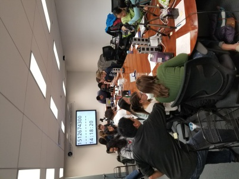

Outreach and Impact
An important part of our research group's activity is outreach, through
education, policy, transition to practice through open-source software
packaages, and other activities. The lab news has a
section with
information on the latest lab outreach activities.
Education
The lab participates in various educational activities, with a focus
on outreach to under-represented high-school students and
undergraduates. Ongoing activities include:
- Mentorship in the Center for Data and Computing Summer Lab
program.
- Summer courses on machine learning and network security to
under-represented students in the Chicago Public School
system, through the University of Chicago Outward Bound program.
- Massive Open Online Courses, including Coursera courses on
Software Defined Networking and Applications of Machine
Learning.
- Continuing education courses through the University of Chicago
Office of Professional Education in the areas of machine
learning and cybersecurity.
The research group also works with undergraduate researchers from the University of Chicago throughout the year.

Policy
Much of the lab's research has implication for local, state, and
national policy. Professor Feamster and other members of the lab
actively participate in various outreach activities, including:
- Participation in the Broadband Internet Technical Advisory
Group (BITAG), which writes technical documents for
policymakers in Washington, D.C. The group has presented to
influential policymakers, including commissioners at the
Federal Communications Commission (FCC) and the Federal Trade
Commission (FCC).
- Authoring of comments, including comments to the FCC, FTC, and
US Patent and Trademark Office on topics
pertaining to wireless spectrum allocation, network privacy,
open-source router software, collection of data for research
purposes, and intellectual property concerns of creative works
generated from machine learning models.
- Regular presentation at tech policy conferences in Washington D.C.,
including FTC PrivacyCon and State of the Net.